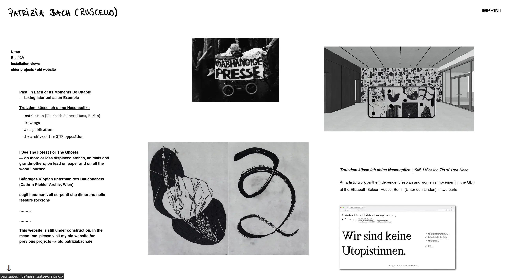
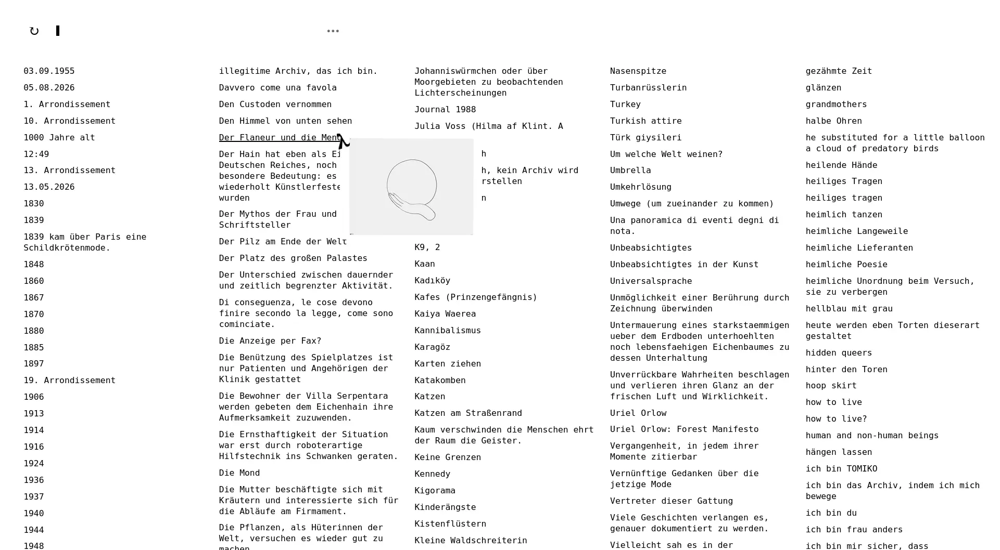
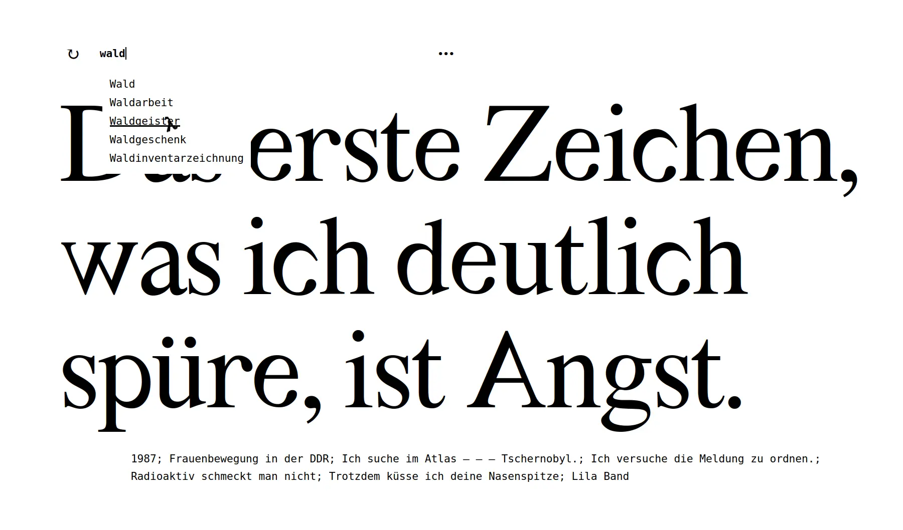

Patrizia Bach

For the Berlin-based fine artist Patrizia Bach I took over a legacy Wordpress-based website, implementing Patrizia's visual design concept and developing several custom widgets and interactive features.

Patrizia has a unique artistic practice in which she continuously organises, labels, maps and remaps her artwork in a database. I worked with Patrizia to implement a small "search engine" on top of her database, allowing visitors to interactively explore her work through words and visuals simultaneously.
